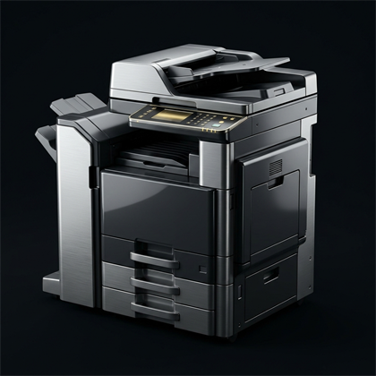
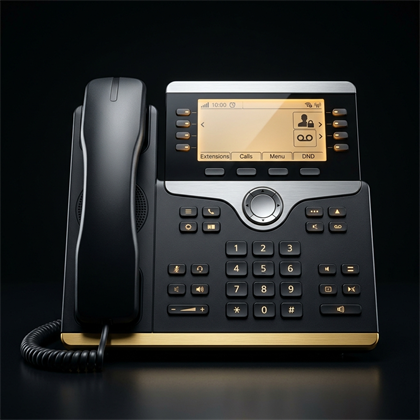
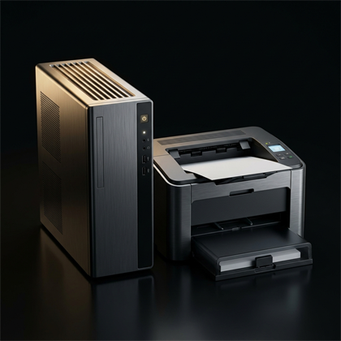

サービス
Web Content Create
Web制作・HPサイト・LPサイト
ホームページやLP（ランディングページ）の企画・制作から公開後の運用保守まで一貫して代行。既存ホームページの運用・更新のみの請負にも対応し、ビジネスの成果につながるWeb基盤を構築します。
Webコンテンツ制作・運用のご相談オフィス機器・ソリューション導入
複合機

印刷・コピー・スキャンの機能を一台に集約した複合機
ビジネスフォン

オフィスのコミュニケーションを効率化するビジネスフォン。内線・転送・保留などの基本機能はもちろん、電話応対の履歴管理や会議通話機能も搭載。
PC・プリンター

業務内容やオフィス環境に合わせて、最適なパソコンやプリンターを提案。高速処理や高画質印刷など、効率的に作業を進められる性能を備える
Business Automation & Digital Transformation
業務オートメーション・DX
煩雑化した業務フローと人手不足の問題をデジタルトランスフォーメーションで解決。現場のコンサルティング・開発一手に担います。
業務自動化などに関連するご相談はこちら会社概要
- 会社名
- 合資会社テクノスペース
- 所在地
- 〒807-0874 福岡県北九州市八幡西区大浦1-12-26
- 連絡先
- 093-692-1761
- 代表者
- 福田 智
- 営業時間
- 平日 9:00〜17:00
- 対応エリア
- 北九州市内（Web制作・DX自動化は全国オンライン対応可）
- 事業内容
- Web制作（HP・LPサイト制作・運用保守）／オフィス機器導入（複合機・ビジネスフォン・PC・プリンター）／業務オートメーション・DX
よくあるご質問
対応エリアはどこまでですか？
オフィス機器（複合機・ビジネスフォン・PC・プリンター）の導入・サポートは北九州市内を中心に対応しております。Web制作（ホームページ・LP制作・運用保守）および業務オートメーション・DXに関するご相談は、全国オンラインにて対応可能です。
導入の相談や見積もり、現地調査は可能ですか？
はい、無料相談・お見積もり・現地調査に対応しております。現在のオフィス環境のお悩みや導入をご検討中の機器・システムについて、お気軽にお問い合わせください。
営業時間を教えてください。
営業時間は平日 9:00〜17:00 です。お電話（093-692-1761）または本ページのお問い合わせフォームよりご連絡いただけます。
既存のホームページの運用や更新のみでも依頼できますか？
はい、新規ホームページ・LPの企画制作だけでなく、既存ホームページの運用保守・更新のみの請負にも対応しております。